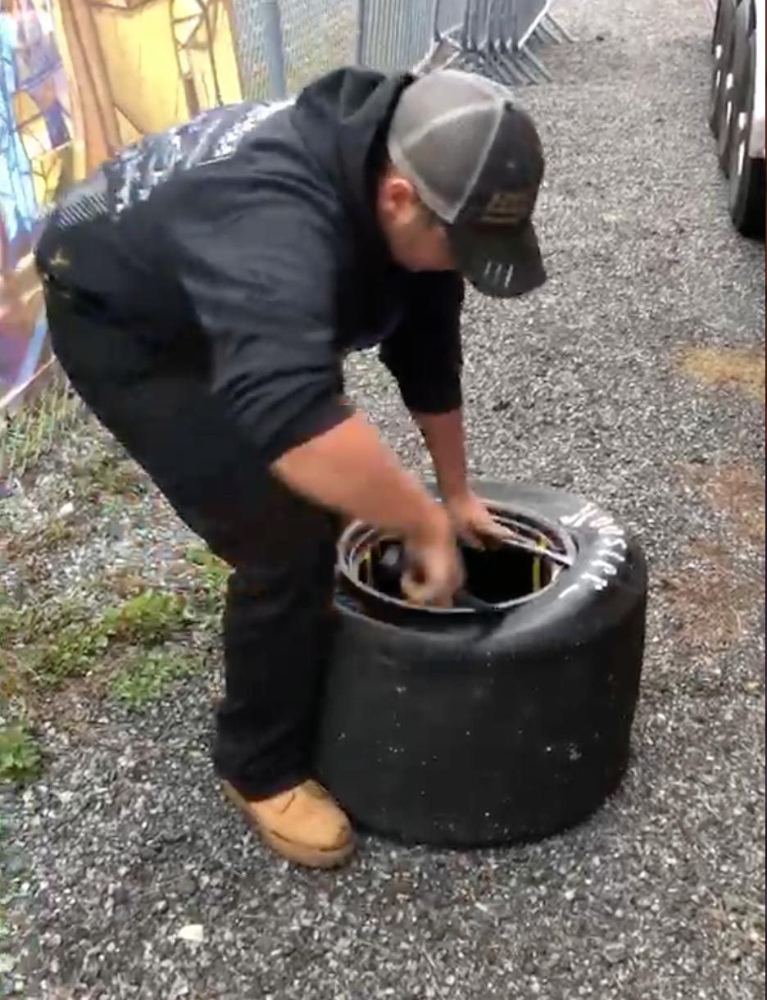

Changing a tire
How to take a tire off a rim
September 12, 2017
Changing in a tire is like riding a bike, once you learn it you will never forget. There are many different way to do it. For example, you can use a machine which is good for tire with a width smaller then 11.5 inches. You could use a machine for a tire bigger than that but it woukd take more time and more effort. In this how to I will teach you step by step to take off a Sk Modified tire/ Whelen Modified Tour tire. You can also use this technique on any tire but it is easier and more efficient for modified tires that are 27 inches wide.
Materials
- Core tool
- Bead breaker
- 2 tire spoons
- Tire with rim

Steps to take a tire off the rim
- First you have to take all the air out of the tire outside part of the tire
- After most of the air is out of the tire, take the bead breaker and put it on the edge of the rim.
- Step on part B of the bead breaker with one leg and take part A and bend towards the ground
- After you hear the air come out you can take the foot that was on part B and stomp on the sides of the tires that are not broken yet.
- After that side is broken, take one spoon and put it between the tire and rim
- Then take your second spoon and go over about 3-5 inches and force the spoon end between the tire and rim.
- You can now take the first spoon out and put that one 3-5 inches from the second spoon and do the same thing as step 6.
- Continue to do this until the outside part of the tire is fully above the rim.
- You can now flip over the tire and repeat steps 3-4
- Pull the rim through the back of the tire until the outside edge of the rim stops it.
- Then put one spoon between the rim and tire and bend it towards the tire
- This should make it so most of the tire is off of the edge of the rim
- Now take the hand this is not holding the spoon and grab the rim and pull
- The tire is now off the rim
- To learn how to put a new tire back on go to next page